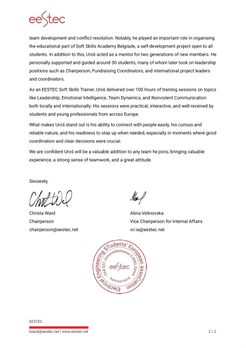
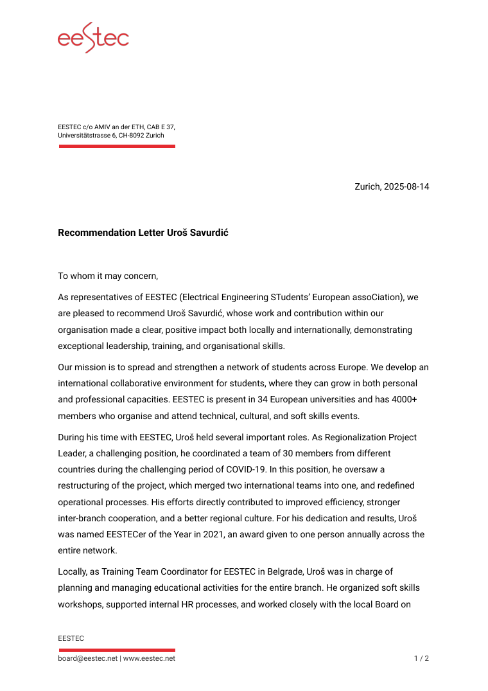

Internal Representations of Safety Across Post-Training
Aug – Sep 2026A controlled nine-checkpoint chain with a frozen 654-prompt benchmark, preregistered analysis and cross-fitted causal estimates.
M.Sc. EECS, University of Belgrade · previously Applied Science Intern at Microsoft
I work on machine learning systems from both ends — building them, and finding out what they actually do. Retrieval pipelines, evaluation harnesses and containerized services on one side; controlled experiments, causal interventions and preregistered analysis on the other.
The through-line is measurement: whether a change actually did anything, and how you would know. That question is the same whether the answer ships or gets written up, which is why the work runs across both — LLM evaluation at Microsoft, a controlled study of what preference optimization does to a model’s safety representation, and performance measurement across CPU, GPU and TPU.
Finished Internal Representations of Safety Across Post-Training — nine checkpoints, a frozen 654-prompt benchmark, preregistered analysis.
Finished the Applied Science internship at Microsoft — LLM evaluation, knowledge graphs and multi-hop reasoning.
Gave a talk on attention across computational paradigms at SICAAI, the 5th Serbian International Conference on Applied Artificial Intelligence, in Kragujevac.
Started as Research Collaborator at IPSI Belgrade, with Prof. Veljko Milutinović.
Applied science at Microsoft, and an ongoing research collaboration at IPSI Belgrade.
Microsoft — Applied Science Intern
Mar 2026 – Jul 2026ResultA consensus of graph-based and surface-level features agreed with human complexity labels 81.2% of the time, against 64.6% for a standard hop-count baseline.
Applied Science internship, Microsoft. Hop count is the standard proxy for multi-hop difficulty; it is a real signal but an incomplete one.
| Scorer | Agreement |
|---|---|
| Multi-view consensus | 81.2% |
| Hop-count baseline | 64.6% |
IPSI Belgrade — Research Collaborator
Feb 2026 – presentSix projects. Filter by the kind of work you care about.
A controlled nine-checkpoint chain with a frozen 654-prompt benchmark, preregistered analysis and cross-fitted causal estimates.
Contrastive fine-tuning on 20k CoSQA pairs took MRR@10 from 0.786 to 0.911, with FAISS retrieval over 550+ indexed snippets.
Benchmarked attention across 12 computational paradigms and 17 implementations — eight measured on CPU, an NVIDIA T4 and a TPU v5e, the rest modelled. Traced a 92× throughput gap in one PyTorch call to silent FP32/FP16 kernel dispatch.
CNN-LSTM and ResNet-Transformer recognition models, packaged as a Dockerized FastAPI service with W&B tracking and CircleCI, architected for AWS Lambda.
Engagement prediction to MAE 5.06 from 30+ features over 90k sessions, plus A/B tests worked both frequentist and Bayesian.
Backpropagation written from scratch in NumPy and raced against a genetic algorithm, plus 2-opt, simulated annealing and differential evolution.
Three projects with the measurements behind them. Every figure has a table view underneath with the exact numbers.
FindingAblating the refusal direction changed behavior in all four training branches, but the size of that change varied by roughly 13x depending on the path taken — and the branch with the largest behavioral shift carried the smallest direction-specific effect.
Layer 24. 0 = benign cluster, 1 = overtly harmful cluster.
| Stage | Position |
|---|---|
| Base | 0.33 |
| Instruction tuning | 0.72 |
| Safety SFT | 0.65 |
| DPO | 0.90 |
| DPO direct from instruction tuning | 1.04 |
n=120 per branch, 95% confidence intervals. Post hoc, one seed per cell, not multiplicity-corrected.
| Branch | Effect | 95% CI |
|---|---|---|
| Safety SFT then DPO, Alpaca | +0.154 | [+0.105, +0.203] |
| Safety SFT then DPO, Dolly | +0.044 | [+0.005, +0.085] |
| DPO direct from M1, Alpaca | +0.025 | [+0.013, +0.039] |
| DPO direct from M1, Dolly | +0.012 | [+0.003, +0.023] |
FindingOne PyTorch call, 92x apart. scaled_dot_product_attention silently dispatches to the math fallback in FP32 and the memory-efficient kernel in FP16 — 104 against 9,633 GFLOP/s on the same T4, with the chosen backend logged on every run to prove it.
Presented at the 5th Serbian International Conference on Applied Artificial Intelligence (SICAAI), Kragujevac, May 2026.
Blue rows ran on hardware I had access to — CPU, an NVIDIA T4 and a TPU v5e. Orange rows are simulators or analytical cost models, including the roofline estimate for decomposed FP32 GPU and the systolic-array model for decomposed TPU. The full benchmark covers 12 paradigms and 17 implementations; a paradigm is the technology, and CPU, GPU and TPU each carry more than one implementation. This chart shows the 14 that share n=2048, d=256 — the chemical, biological and quantum simulators only run at n=32, d=16 and are reported separately.
| Implementation | GFLOP/s | Source |
|---|---|---|
| TPU, fused (JAX/XLA) | 15,772 | measured |
| GPU FP16, decomposed | 11,327 | measured |
| GPU FP16, fused SDPA | 9,633 | measured |
| TPU, systolic array | 8,706 | modeled |
| GPU FP32, decomposed | 6,592 | modeled |
| Dataflow (Maxeler-style) | 977 | modeled |
| Optical (photonic MZI) | 510 | modeled |
| GPU FP32, fused SDPA | 104 | measured |
| CPU, decomposed (AVX2) | 18 | measured |
| CPU, fused SDPA | 18 | measured |
| GaAs RISC-V | 0.15 | modeled |
| IoT edge (ARM M4F) | 0.11 | modeled |
| WSN, 64 nodes | 0.01 | modeled |
| CdTe Turing machine | 0.0007 | modeled |
FindingContrastive fine-tuning moved MRR@10 from 0.786 to 0.911 on CoSQA — a 16% relative gain, with NDCG@10 and Recall@10 up alongside it.
Evaluated with torchmetrics on the held-out split. Recall@10 was already high, so the gain lands in ranking quality rather than coverage.
| Metric | Before | After |
|---|---|---|
| MRR@10 | 0.786 | 0.911 |
| NDCG@10 | 0.831 | 0.932 |
| Recall@10 | 0.969 | 0.996 |
Where I studied, what I volunteer at, the tooling I actually reach for, and what has been recognized.
Volunteer with EESTEC, the European EECS student association — 34 universities and 4,000+ members — since February 2019. It is where I learned to run teams and teach.
EESTEC — Soft Skills Trainer
Aug 2021 – presentEESTEC — Training Team Coordinator, LC Belgrade
Feb 2022 – May 2023EESTEC — Regionalization Coordinator, then Project Leader
Aug 2019 – Aug 2021EESTEC — PR Team Leader and Event Organizer
2019

Recommendation letterEESTEC International Board · Zürich, August 2025Christa Ward, Chairperson · Atina Velinovska, Vice Chairperson for Internal AffairsRead it — PDF, 2 pagesTopics I trainFacilitation and meeting design · feedback and nonviolent communication · emotional intelligence · team dynamics · presentation · strategic and design thinking · problem solving and creativity · training design · learning from experience